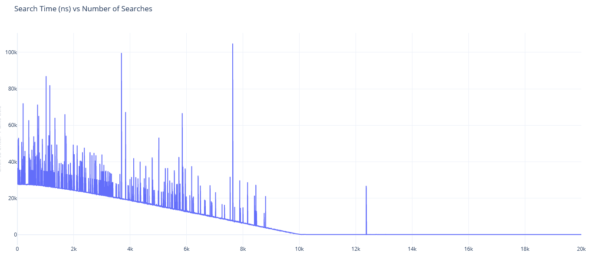

SEP200 – Assignment 2: The Weighted List Datatype
Due: end of week 13
Business Case (Marketing, Project Manager, Senior Executives)
Search algorithms are often compared based on their worst case. Comparisons with the average case are not often made. A poor search
algorithm can be improved on with time if the trends of the search are taken into consideration. We need a search algorithm that
"learns" to improve itself with time.
Requirements (Marketing, Project Manager, Project Lead)
For a search algorithm to learn, it must provide the following:
- Make commonly searched for items easier to find.
- Make less commonly searched for items harder to find.
- The datatype should present an interface similar to other datatypes.
- The datatype should accommodate all kinds of datatypes, both standard and non-standard.
- To test the search algorithm, let us apply it to the list datatype to create a weighted list datatype.
- The search algorithm will be applied to other datatypes afterwards.
Design (Project Lead, Senior Engineers)
The datatype will be based on an algorithm that moves searched for items closer to the front of the list. The list will only
have a push_back() function for adding items to the list. Therefore, new items are put at the back of the list.
It will have a pointer to the front of the list. When an item is searched for, that item moves "up" the list (closer to the front)
by one spot. Since there is only a pointer to the front of the list, an item is easier to find if it is closer to the front of
the list. The datatype will expose the following functions to the programmer:
- WeightedList();. A default constructor for the list.
- WeightedList(const WeightedList& rhs);. A copy constructor for the list.
- WeightedList& operator=(const WeightedList& rhs);. A copy assignment for the list.
- WeightedList(WeightedList&& rhs);. A move constructor for the list.
- WeightedList& operator=(WeightedList&& rhs);. A move assignment for the list.
- iterator begin();. Return an iterator to the beginning of the list.
- iterator end();. Return an iterator to the end of the list.
- void push_back(const T& data);. Push data of type T to the end of the list.
- iterator search(const T& data);. Search for an item with value data. Return the iterator to this item.
- iterator erase(iterator it);. Erase a data item. Return the iterator to the next item.
- iterator erase(iterator begin, iterator end);. Erase a range of data items from begin to end excluding end. Return an
iterator to end.
- bool empty() const;. Return true if the list is empty, false otherwise.
- int size() const;. Return the number of data items in the list.
- ~WeightedList();. A destructor for the weighted list.
- iterator operator++();. Perform pre-increment on an iterator and return the next iterator.
- iterator operator++(int);. Return the current iterator then perform a post-increment on it.
- bool operator==(iterator rhs);. Return true if both iterators point to the same data item, false otherwise.
- bool operator!=(iterator rhs);. Return false if both iterators point to the same data item, true otherwise.
- T& operator*();. A reference to the data element referred to by the iterator.
Implementation (Junior and Senior Engineers)
- The Data Element. The data element will be a private structure within the weighted list container class.
The structure will contain:
- Data of a generic type,
- A pointer to the next data element.
- A constructor that passes the data through to the data element.
- The iterator class. The iterator class will be public within the weighted list container class. It will
declare the weighted list container class as a friend so it will have access to all the data elements within the
weighted list class. The iterator class will have a pointer to the current data element in the list of data
elements within the container weighted list class. The iterator class will perform the following:
- iterator operator++();. Advance the current element pointer. Return the current element.
- iterator operator++(int);. Return the current element but advance the current element pointer to the next element.
- bool operator==(iterator rhs);. Perform a logical comparison between the current element and the rhs element. Return true
if they are the same.
- bool operator!=(iterator rhs);. Perform a logical comparison between the current element and the rhs element. Return true
if they are different.
- T& operator*();. Returns a reference to the current element.
- The weighted list class. The weighted list class will contain:
- A list of data elements.
- The iterator class.
- A pointer to the front data element.
- A counter to keep track of the number of data elements.
The weighted list class will implement the following functions:
- WeightedList();. A default constructor for the list. Need to initialize the front and counter variables.
- WeightedList(const WeightedList& rhs);. A copy constructor for the list. Copy node by node from rhs.
- WeightedList& operator=(const WeightedList& rhs);. A copy assignment for the list. Delete the current list and copy node by node from rhs.
- WeightedList(WeightedList&& rhs);. A move constructor for the list. Set the front variable to the front variable of rhs. Then set the front variable
of the rhs to nullptr. Copy the data element counter from the rhs then set the data element counter of the rhs to zero. The rhs is effectively an empty list.
- WeightedList& operator=(WeightedList&& rhs);. A move assignment for the list. Delete the current list then set the front
variable to the front variable of rhs. Then set the front variable of the rhs to nullptr. Copy the data element counter from the
rhs then set the data element counter of the rhs to zero. The rhs is effectively an empty list.
- iterator begin();. Return an iterator to the beginning of the list. Return the data element pointed to by the front pointer.
- iterator end();. Return an iterator to the end of the list. The last element of the list is actually nullptr by convention.
- void push_back(const T& data);. Push data of type T to the end of the list. This means starting from the front of the list, traversing all
the way through to the end, then inserting your data element there.
- iterator search(const T& data);. Search for an item with value data. Return the iterator to this item. If the data element is found,
it is moved up by one space in the list. To do this you might have to have a pointer to the current element, the element before it, and the element
before that one.
- iterator erase(iterator it);. Erase a data item. Return the iterator to the next item. To do this you might have to have a pointer
to the current element and the one before it.
- iterator erase(iterator begin, iterator end);. Erase a range of data items from begin to end excluding end. Return an
iterator to end. To do this you might have to have a pointer to the first element, a pointer to the element before it, and a pointer to the
last element.
- bool empty() const;. Return true if the list is empty, false otherwise. If you have a variable that keeps track of the
number of data elements, you can simply return true if this counter is zero, false otherwise.
- int size() const;. Return the number of data items in the list. If you have a counter that keeps track of the number of data elements,
you can simply return the value of this number.
- ~WeightedList();. A destructor for the weighted list. Be sure to delete all the data elements in the list.
Testing and Rework (Junior and Senior Engineers, Product Support)
- A partially implemented weighted list class has been provided for you. WeightedList.h.
- The test program WeightedListMain.cpp with a correctly operating
weighted list should produce an output as follows:
Original list:
5
4
3
2
1
search 3, 2, 1:
5
3
2
1
4
erase first two:
2
1
4
search 4, 4, 4:
4
2
1
erase the second one:
4
1
erase the second one again (should have advanced to the last):
4
added 10, 20, 30, 40:
4
10
20
30
40
search for 10:
10
4
20
30
40
erase the entire list:
added 15, 16, 17, 18. 19, 20:
15
16
17
18
19
20
seached 20 four times and 18 once:
15
20
16
18
17
19
erased a range (1,3) excluding 3:
15
18
17
19
create wList2 from wList by copy constructor with search 19:
15
18
19
17
wList2 empty:0 wList2 size:4
create wList3 from wList by copy assignment with search 18:
18
15
17
19
create wList4 from wList3 by move constructor:
18
15
17
19
create wList5 from wList2 by move assignment:
15
18
19
17
wList2 now became:
wList3 now became:
Questions
- Would the following work? Why or why not? (0.5 mark)
for (auto e = wList.begin(); e != wList.end(); ++e) {
wList.erase(e);
}
- Would the following work? Why or why not? (0.5 mark)
for (auto e = wList.begin(); e != wList.end(); ) {
e = wList.erase(e);
}
- Compare the weighted list with STL's list. What pointers and functionality appear in
STL's list that are missing in our weighted list? (0.5 mark)
- The program WeightedListMainTimer.cpp was created to run in
Linux (where there are higher resolution timers) to see if the search algorithm actually improves itself over time.
See the bottom 1/4 of the file for the test code. A weighted list was created with 10,000 elements and an element with
data=6 was inserted at the end. The program performed a number of searches, with a search for data=6 every third search,
to simulate a situation where data=6 starts in the worst case (at the back) but is searched for frequently.
The time elapsed for each search for data=6 is recorded. Take a look at the data in the file
searchTime.dat. On the left is the number of the search attempt and on the
right is the time elapsed in nanoseconds. You can see a graph of search time vs number of searches below.
What will you report to the company executives - did this search algorithm "learn"? Did it learn well enough to pursue
applying this algorithm to other data types? If not, how would you improve this algorithm? (0.5 mark)

Timeline
Days 1-7: The iterator class.
Days 8-14: The functions of the weighted list.
Days 15-21:Putting it all together. Test and Rework. Questions.
Marking Rubric
Assignment 2 is worth 15% of your final grade and as such is marked out of 15 as follows:
| Does not meet expectations | Satisfactory | Good | Exceeds Expectations |
|---|
The Iterator Class
(4 marks) | Does not meet requirements | Meets the most important requirements | Meets all requirements with minor errors | Meets all requirements with no errors |
The Weighted List Class
(8 marks) | Does not meet requirements | Meets the most important requirements | Meets all requirements with minor errors | Meets all requirements with no errors |
Documentation
(1 mark) | Does not contain documentation | Contains header documentation for either all files or for all functions within each file |
Contains header documentation for all files and for most functions within each file | Contains header documentation for all files and for all functions within each file.
Documents unclear code. |
Questions
(2 marks) | Answers no question correctly | Answers some questions correctly |
Answers most questions correctly | Answers all Questions correctly |
Submission
Please email all source code, diagram(s) and answers to questions to:
@senecacollege.ca
Your questions can be submitted in a separate document or embedded within your source code.
Late Policy
You will be docked 10% if your assignment is submitted 1-2 days late.
You will be docked 20% if your assignment is submitted 3-4 days late.
You will be docked 30% if your assignment is submitted 5-6 days late.
You will be docked 40% if your assignment is submitted 7 days late.
You will be docked 50% if your assignment is submitted over 7 days late.